An extended abstract of this work was accepted at TRC30. See you in Greece!
Abstract
The sheer scale and diversity of transportation make it a formidable sector to decarbonize. Here, we consider an emerging opportunity to reduce carbon emissions:
the growing adoption of semi-autonomous vehicles, which can be programmed to mitigate stop-and-go traffic through intelligent speed commands and, thus, reduce emissions.
But would such dynamic eco-driving move the needle on climate change? A comprehensive impact analysis has been out of reach due to the vast array of traffic
scenarios and the complexity of vehicle emissions. Such an analysis would require careful modeling of many traffic scenarios and solving an eco-driving problem at
each one of them - a challenge that has been out of reach for previous studies. We address this challenge with large-scale scenario modeling efforts and by using
multi-task deep reinforcement learning with a carefully designed network decomposition strategy. We perform an in-depth prospective impact assessment of dynamic
eco-driving at 6,011 signalized intersections across three major US metropolitan cities, simulating a million traffic scenarios. Overall, we find that vehicle
trajectories optimized for emissions can cut city-wide intersection carbon emissions by 11-22%, without harming throughput or safety, and with reasonable assumptions,
equivalent to the national emissions of Israel and Nigeria, respectively. We find that 10% eco-driving adoption yields 25%-50% of total reduction, and nearly 70% of
the benefits come from 20% of intersections, suggesting near-term implementation pathways. However, the composition of this high-impact subset of intersections varies
considerably across different adoption levels, with minimal overlap, calling for careful strategic planning for eco-driving deployments. Moreover, the impact of
eco-driving, when considered jointly with projections of vehicle electrification, hybrid vehicle adoption, and travel growth, remains significant. More broadly,
this work paves the way for large-scale analysis of traffic externalities, such as time, safety, and air quality, and the potential impact of solution strategies.
Dynamic eco-driving at signalized intersections
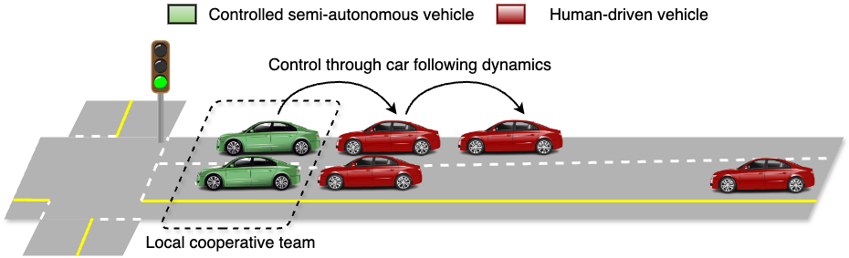
A schematic illustration of eco-driving at signalized intersections is shown above. Controlled vehicles
are driven in a way that reduces their carbon emissions. Through car following dynamics and
implicitly forming local cooperative teams, controlled vehicle behaviors can affect human-driven
vehicle behaviors, leading to a reduction in carbon emissions in human-driven vehicles as well.
Methodology
In high level, there are three main steps in our method which include scenario modeling, eco-driving control, and impact assessment.
In scenario modeling, a set \(\Phi\) of traffic scenarios is identified based on the factors that affect eco-driving benefits.
These scenarios are pruned to select a subset \(\Phi'\) of representative scenarios. Another subset \(\phi_T\) is selected for training eco-driving policies.
By using the subset \(\Phi_T\), we then train a set of eco-driving policies \(\Pi\) using multi-task deep reinforcement learning.
These policies are then used for zero-shot transfer learning-based policy selection to select the best policy for each scenario in \(\Phi'\).
This final scenario to policy assignment is denoted by \(\Pi^e\). Finally, the impact assessment is performed using \(\Pi^e\) on \(\Phi'\).
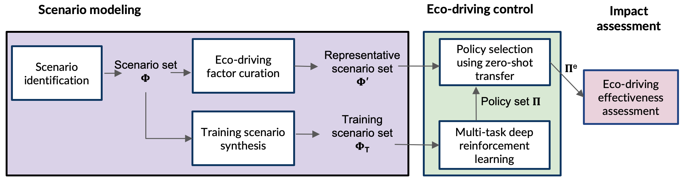
A visual illustration of eco-driving factors we consider and how they affect emissions modeling is shown below.
The legend on the top indicates how each column is connected. Emission cause: Factors stem from different emission causes.
A single factor can manifest due to multiple causes, but we illustrate a known predominant cause for simplicity.
Factor: there are around 33 major factors affecting emissions of vehicles. Factor valuations: A list of factor values we consider
as each factor can take multiple values. For simplicity of the figure, we omit factor values for continuous variable factors.
Modeling choice: Indicates what knowledge or data sources inform each factor/factor value. Methodology: Indicates how we translate
the modeling choice into our simulation-based analysis. We leverage three levels of modeling: traffic-level, vehicle-level, and behavior-level.
Each modeling level is captured by one modeling methodology.
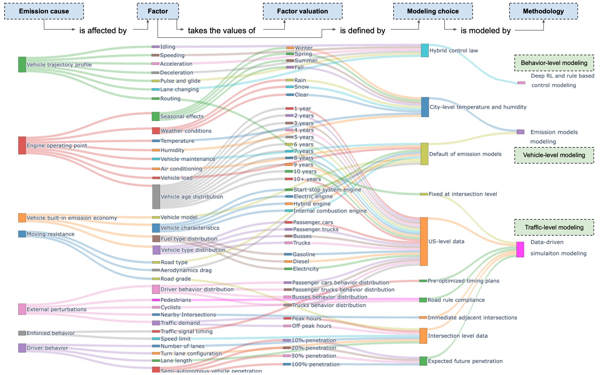
Annual average emission reduction benefits
Eco-driving achieves a notable 11-22% emission reduction, equivalent to the national carbon emissions of Israel and Nigeria, respectively.
Notably, a 10% eco-driving adoption can yield 25-50% of the total emission reduction,
showcasing a non-linear benefit scaling and greater potential for short-term deployments to gain a majority of total benefits. Importantly, these gains
incur no costs to intersection throughput.
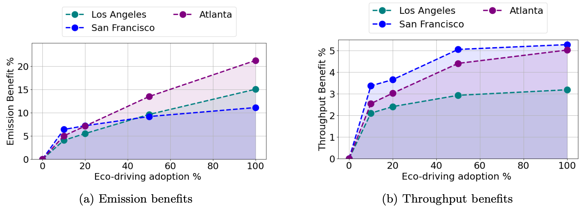
Left: Annual average emission reduction vs. eco-driving adoption (by factoring all seasons and peak and off-peak hours). Right: Throughput improvement with
varying adoption levels.
The spatial distributions of these emission benefits under different eco-driving adoption levels is shown below. The low benefits intersections can happen due to three reasons.
Additionally, consistent emission benefits can be observed under different weather conditions across seasons, with minor fluctuations. This emphasizes that eco-driving can yield benefits throughout the year.
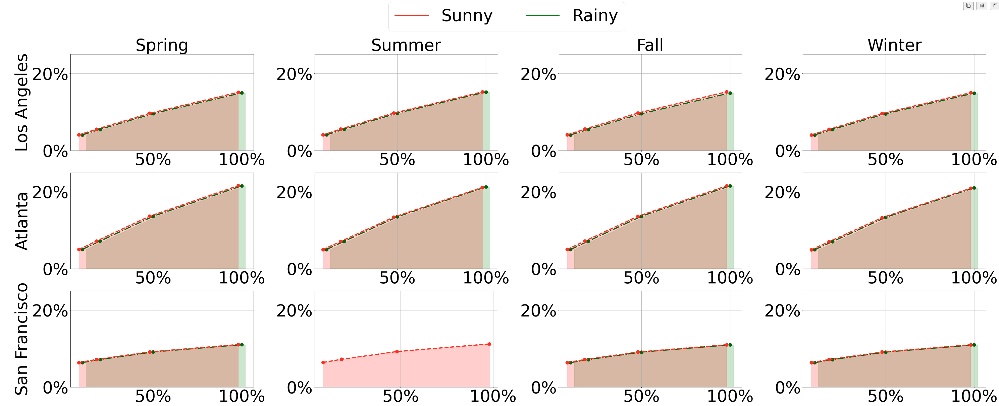
Impact of weather conditions on eco-driving. For each city, under every season, we present the eco-driving emission benefits with two different weather
conditions: sunny and rainy. Not all cities go through every weather condition for a given season.
We shift some of the curves within -2% and 2% on the x-axis for better visibility.
Overall eco-driving benefits
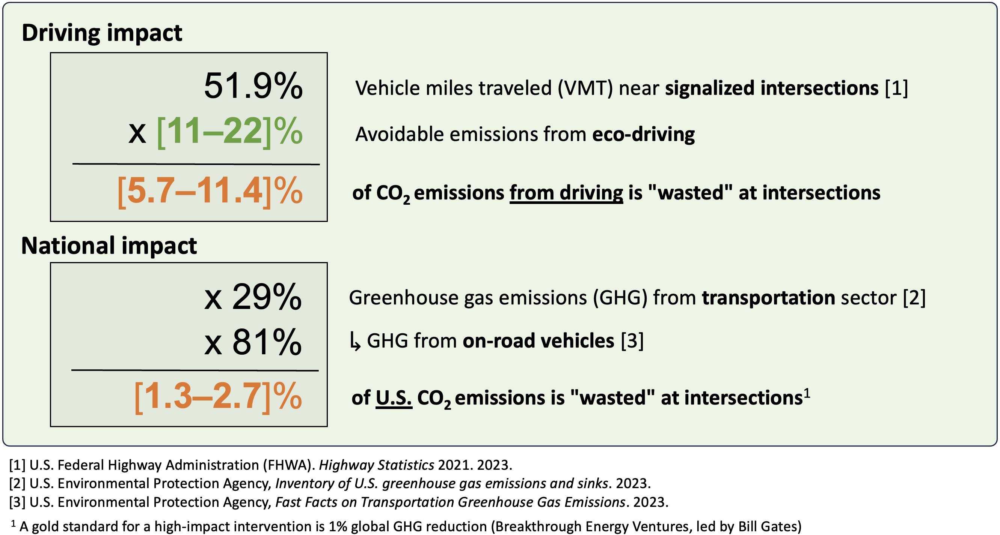
Eco-driving behaviors
As main behavioral change due to eco-driving, controlled vehicles learn to glide when approaching the intersection to avoid idling at the intersections.
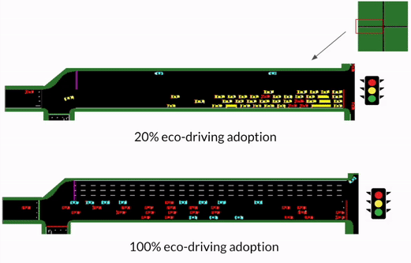
Eco-driving behavior under 20% and 100% adoption level. Red and cyan vehicles are controlled vehicles and yellow
vehicles are human driven. Cyan vehicles indicate they are expecting to turn at the next intersection.
( Download MP4 )
A two-lane representative intersection scenario with human-driven vehicles shows typical stopping at a traffic signal, resulting in unwanted idling.
In contrast, the eco-driving policies exhibit a non-stopping behavior, with most vehicles smoothly passing through the intersection without coming to a halt.
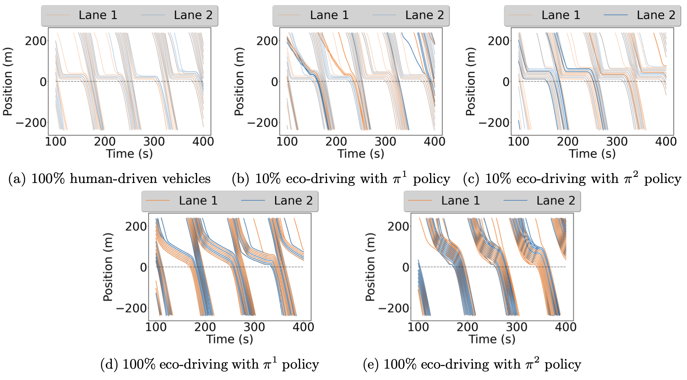
Time-space diagrams of semi-autonomous vehicles (highlighted) and human-driven vehicles (muted) for a selected representative two-lane intersection.
We further analyze the induced road safety metrics of these learned behaviors compared to human-like driving. Figure below presents a roadway safety analysis using widely
used surrogate safety measures (SSMs) commonly employed in assessing roadway safety. We analyze five SSMs, namely: time to collision (TTC), post-encroachment time (PET),
maximum speed (MaxS), change in speed (DeltaS), and deceleration rate (DR). Results suggest that the learned behaviors are as safe as human-like driving,
resulting from smoother vehicle behaviors. However, given that eco-driving behaviors of controlled vehicles are emerging behaviors that may come as counterintuitive
for regular human drivers, it may trigger unforeseen human-driver responses, requiring additional human-factor studies for a better understanding of such human factors at play.
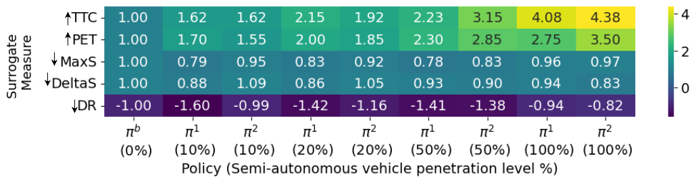
The safety of vehicle flow behavior measured using safety surrogate measures (SSM). The
score for safety surrogate measures of learned policies in comparison to human-like driving. Each row
is normalized by the human driving baseline πb. Arrows indicate whether higher or lower is preferred.
Impact of eco-driving factors
Through a Pearson correlation analysis in the following figures, we underscore key factors influencing emission benefits for informed intersection design and city planning.
We consider nine key eco-driving factors that are known to have a significant impact on emission benefits and are directly observable, including temperature, humidity, speed limit,
road grade, signal time ratio, vehicle inflow, phase count, lane count, and lane length. The signal ratio denotes the ratio between approach-related phase times and total cycle time.
Notably, speed limits, vehicle inflow, and lane lengths significantly impact emission benefits. In particular, when the speed limit and lane length increase, the benefit levels increase.
On the other hand, when the inflow increases, the benefit decreases. This explains why the three cities we consider have different benefit levels. Different cities have different intersection feature distributions.
Thus, cities like Atlanta demonstrate higher benefits, given their higher speed limits and longer incoming approaches, compared to relatively low-benefit cities like San Francisco.
Moreover, a noteworthy shift in influential factors is observed depending on the level of eco-driving adoption. In scenarios with lower adoption (10%), factors such as signal ratio and lane count
carry more weight, whereas, at higher adoption levels (100%), speed limits, vehicle inflow, and lane length become more significant. This observation suggests that optimizing intersections
for eco-driving is non-trivial, as benefits may either rise or decline with changing adoption rates over time. Furthermore, the impact of the signal ratio goes from a negative correlation
to a positive correlation with the increasing adoption level. This highlights that traffic signal timing guidelines will need to be updated frequently over time with the adoption of
eco-driving in order to retain the benefit levels.
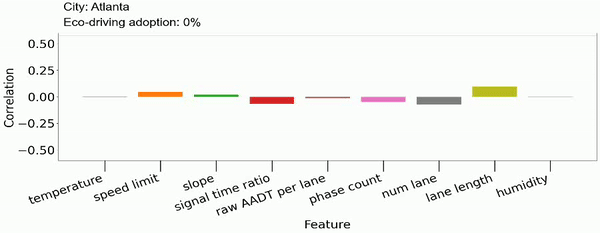
Correlation analysis of eco-driving factors to the emission reduction benefits in Atlanta under different eco-driving adoption levels. ( Download MP4 )
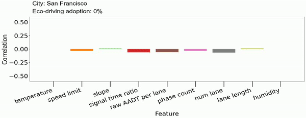
Correlation analysis of eco-driving factors to the emission reduction benefits in San Francisco under different eco-driving adoption levels.( Download MP4 )
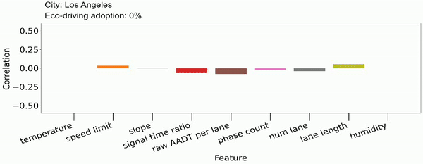
Correlation analysis of eco-driving factors to the emission reduction benefits in Los Angeles under different eco-driving adoption levels. ( Download MP4 )
Intersection compatibility
Following figure shows Pareto charts for all three cities revealing that at least 70% of emission benefits can be achieved by implementing eco-driving in just 20% of intersections
at each adoption level. This emphasizes the potential for an efficient phased deployment, focusing on a specific subset of intersections.
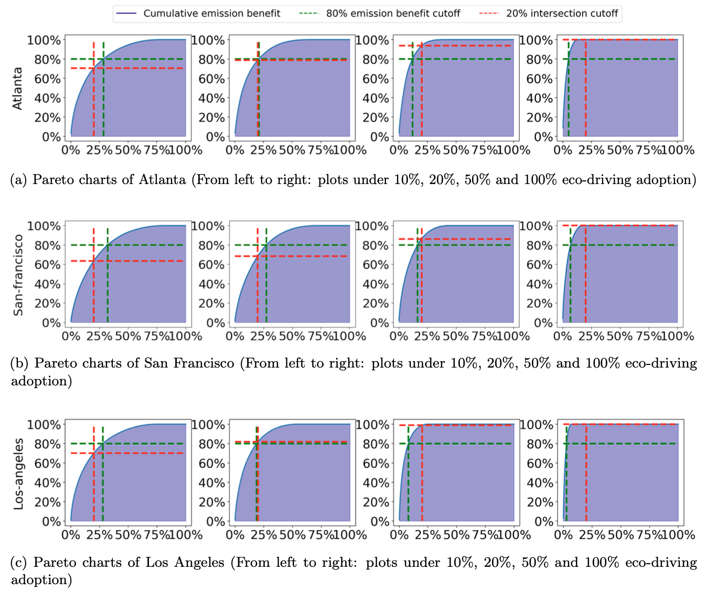
Pareto charts of Los Angeles (From left to right: plots under 10%, 20%, 50% and 100% eco-driving
adoption)
Venn diagrams for the three cities depicting the 20% of
intersections that yield the most significant emission benefits under each eco-driving adoption level.
It illustrates the specific 20% of intersections delivering the most significant emission benefits at every adoption level may have little overlap between
eco-driving adoption levels. It highlights that intersections effective at lower eco-driving adoption levels may not maintain the same efficacy as eco-driving adoption increases,
emphasizing the need for careful deployment planning, such as which intersections to be embedded with roadside units (RSU) for Signal and Phase Timing (SPaT) communication.
In broad terms, this would question what infrastructure is considered long-term value for eco-driving as transportation agencies are often constrained on monetary budgets for infrastructure.
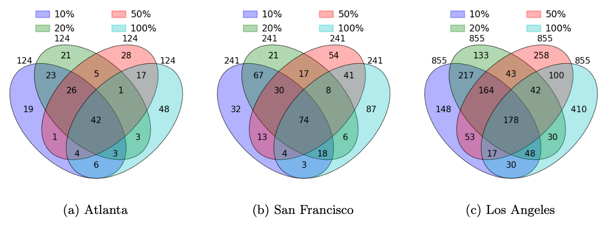
Venn diagrams for the three cities depicting the 20% of
intersections that yield the most significant emission benefits under each eco-driving adoption level.
These figures show how intersections evolve with changing adoption levels (the numbers on the figure
are the intersection counts). A closer look at the figure underscores the need for meticulous planning
when deploying eco-driving, as certain intersections that prove advantageous at lower eco-driving
adoption rates may not exhibit the same level of effectiveness when adoption rates are high.
Eco-driving in the presense of alternative solutions
Our analysis reveals a complementary relationship between eco-driving and the growing prevalence of hybrid and electric vehicle adoption.
Following figure demonstrates the concurrent reduction in carbon emissions from increased eco-driving and the projected adoption of electric and hybrid vehicles in
the US fleet up to the year 2050 for the three cities. Because the electric grid is not carbon-free, energy savings from eco-driving behavior continue to result
in carbon emissions reductions even as more electric vehicles are adopted.
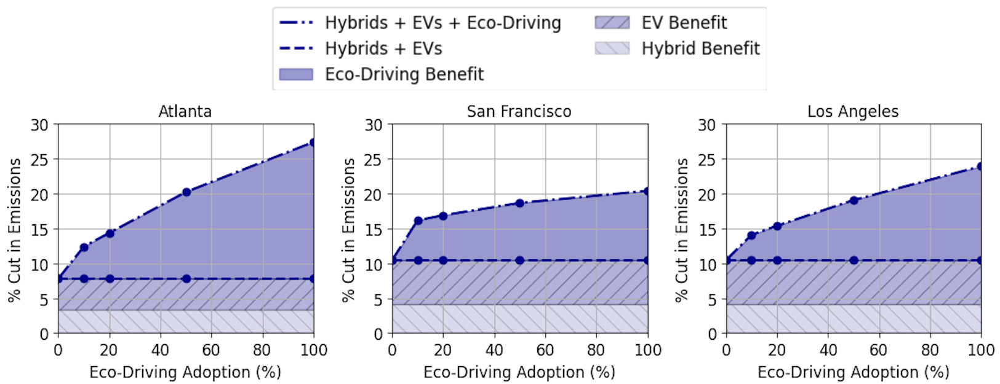
Eco-driving benefits in the presence of vehicle electrification and hybrid engines as
alternative decarbonization strategies. Figure shows total reductions over 2024-2050 in carbon
emissions at various constant eco-driving adoption levels amidst projected electric vehicle and hybrid
adoption in each city. Eco-driving yields additional benefits relative to a future with hybridization or
electrification alone. For example, with an average total adoption rate of 20% from 2024 to 2050,
eco-driving alone would cut San Francisco emissions in that period by about 7%, and when combined
with projected eclectic vehicle and hybrid adoption, would cut emissions by about 17%. Results are
relative to an all internal combustion engine vehicles baseline (i.e., without electrification or hybrid
adoption.)
Authors
Acknowledgments
This research was partially supported by the Utah Department of Transportation (Project F-ST99(783)), and the authors extend their appreciation to Michael Sheffield,
Christopher Siavrakas, and Kelly Njord at the Utah Department of Transportation for constructive discussions and providing their expert opinions on the work.
Authors also extend their appreciation to Steven Barrett, Samitha Samaranayake, Zuduo Zheng, Yashar Farid, Jinhua Zhao, and Felice Frankel for their constructive comments.
The authors also thank Sunera Avinash, Anirudh Valiveru, Jiaxin He, and Dajiang Suo for their help in numerous stages of the project. The authors acknowledge MIT
SuperCloud and the Lincoln Laboratory Supercomputing Center for providing computational resources supporting the research results in this paper.
Citation
@inproceedings{jayawardana@eco-driving2024,
title={Mitigating Metropolitan Carbon Emissions with Dynamic Eco-driving at Scale},
author={Jayawardana, Vindula and Freydt, Baptiste and Qu, Ao and Hickert, Cameron and Sanchez, Edgar and Tang, Catherine and Taylor, Mark and Leonard, Blaine and Wu, Cathy},
year={2024}
}